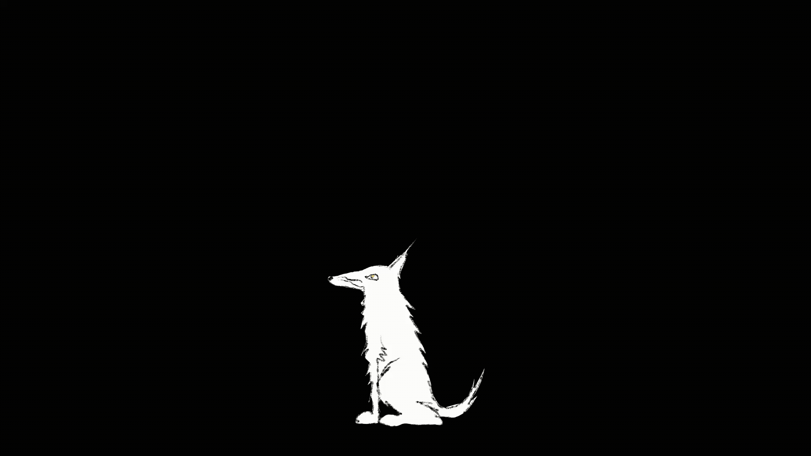
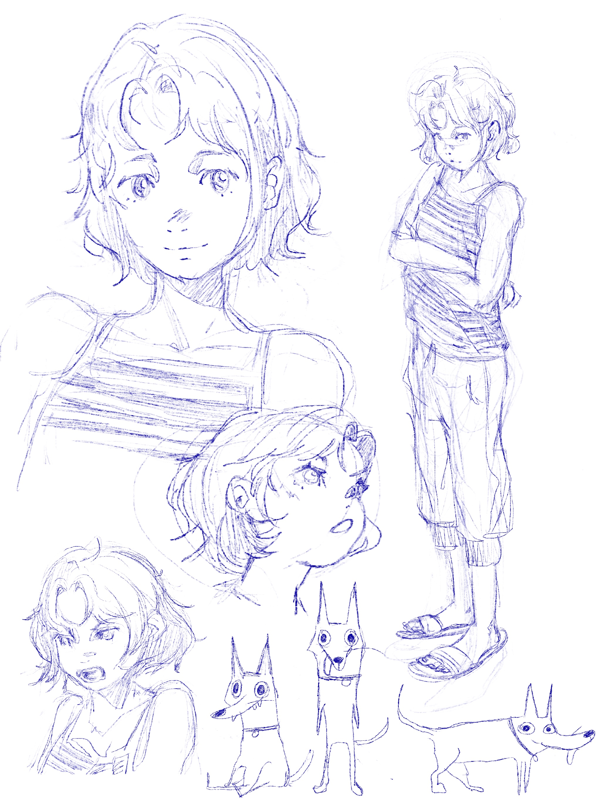

Changing
Back
This animation explores the tension between ambition and avoidance through a self-directed monologue about wasted potential. As the girl speaks, the visuals transform into a rabbit fleeing from a dog, embodying the chase between who she is and who she feels she should be. The boundaries collapse as the dog becomes the girl and the girl becomes the rabbit.


